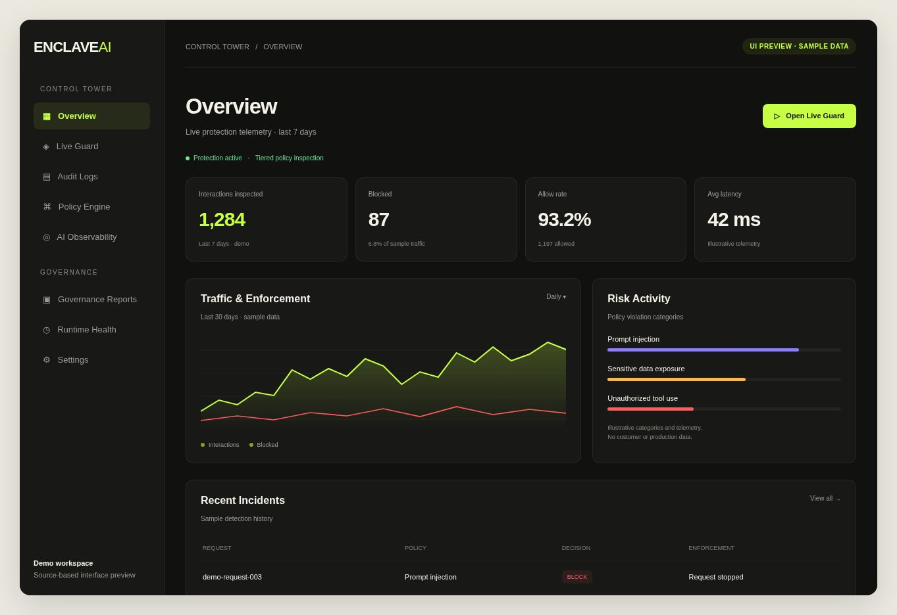
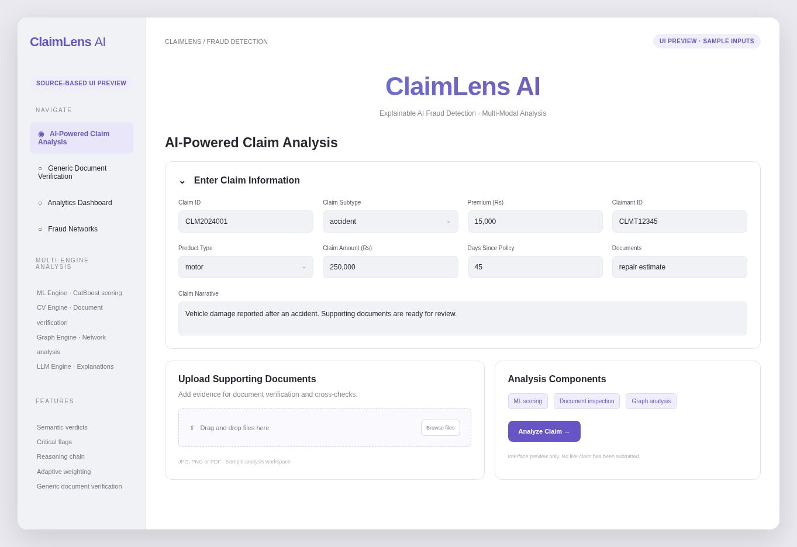
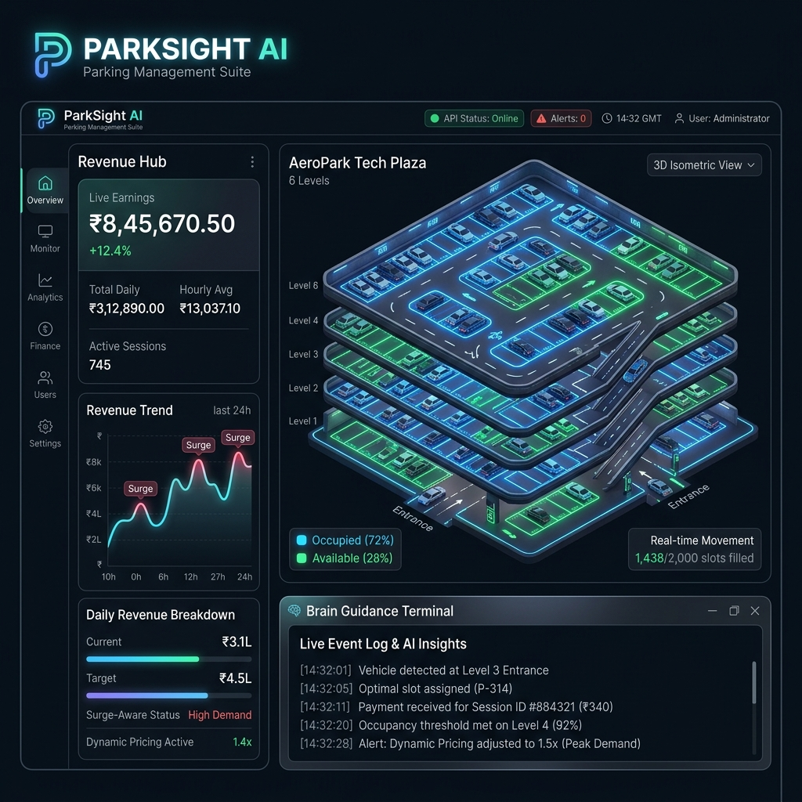

There's intelligence in everything.
We bring it to life.
From ideas to autonomous systems, we engineer the extraordinary.
See how intelligence becomes a system.
Choose a system to explore its decision flow.
Illustrative workflows. Actual implementations vary by project and environment.
The interesting part starts after the model responds.
A promising AI demonstration is one thing. Making it useful inside a real workflow is another. Data needs structure. Systems need integration. Outputs need evaluation. Decisions need boundaries. We work on the engineering that connects these pieces—so AI can contribute to actual operations rather than live as a standalone experiment.
Six disciplines.
One engineering mindset.
The right solution starts with the problem. Explore the capabilities behind our systems.
Agentic AI & Automation
Coordinated intelligenceAI-assisted workflows that coordinate information, tools and decisions across multiple steps, with useful orchestration and human control where it matters.
Enterprise RAG & Knowledge Systems
Grounded knowledgeSearchable systems that retrieve relevant context, check answer quality and make it easier to trace information back to its source.
AI Governance & Security
Boundaries & evidencePolicy-driven layers for content inspection, tool-use safeguards, privacy-aware routing, audit records and operational monitoring.
Machine Learning & Predictive Intelligence
Decision supportModels that detect patterns, estimate risk, forecast outcomes and support better decisions—with attention to data quality and explainability.
Computer Vision & Edge Intelligence
Visual operationsVisual detection connected to operational logic for monitoring, parking, asset visibility and event-driven automation.
AI Product & Platform Engineering
From prototype to systemModels connected to interfaces, APIs, databases, permissions and operational workflows—so AI becomes useful beyond a prototype.
Explore the engineering.

CONTROL TOWER · UI PREVIEWEnclaveAI↗
A policy-driven governance layer that evaluates AI traffic, applies configurable enforcement decisions and records audit-ready context.

CLAIMS ANALYSIS · UI PREVIEWClaimLens↗
A multi-engine insurance claims analysis system combining machine learning, document inspection, relationship analysis and explainable results.

PARKSIGHT · PROJECT CONCEPTParkSight↗
An edge-first parking platform exploring vehicle detection, space occupancy, pricing logic, operational alerts and a unified dashboard.
Start focused.
Build with intention.
From understanding the work to improving the system. Every stage produces something you can examine.
Discover
Use-case definition
↗02 /Architect
Solution blueprint
↗03 /Validate
Pilot findings
↗04 /Engineer
Integrated system
↗05 /Improve
Iteration plan
↗